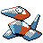

#137
Porygon
Normal
Abilities: Trace, Analytic
Base stats BST 395
HP65
Attack60
Defense70
Speed40
Sp. Atk85
Sp. Def75
Evolution
dbbw EVOLVE_LEVEL, 30, PORYGON2Level-up learnset
LevelMoveType
Lv. 1ConversionNormal
Lv. 1TackleNormal
Lv. 1Conversion2Normal
Lv. 4SharpenNormal
Lv. 7PsybeamPsychic
Lv. 10AgilityPsychic
Lv. 13RecoverNormal
Lv. 15ThundershockElectric
Lv. 19BarrierPsychic
Lv. 25Tri AttackNormal
Lv. 31Lock OnNormal
Lv. 37ThunderboltElectric
Lv. 40Trick RoomPsychic
Lv. 43Psychic—
Lv. 46Zap CannonElectric
Lv. 49Hyper BeamNormal
Lv. 50Double-EdgeNormal